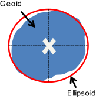
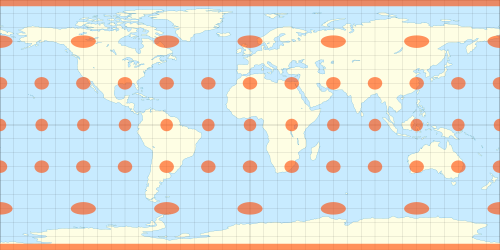
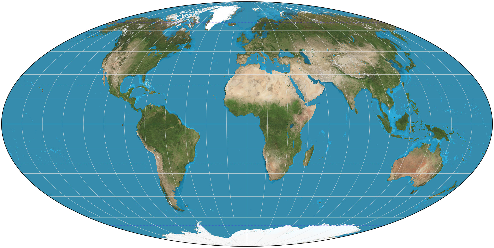

Map Conventions
Mapping conventions facilitate effective conveyance of information. In most cases using them is a good idea (but not necessarily always)

The Blue Marble photograph in its original orientation.
South’s up!
DMS to DD conversion
128° 40’ 52.0428” W
128° 40’ 52.0428” W
128° 40’ 52.0428” W
128° 40’ 52.0428” W
128° 40’ 52.0428” W

128
128 + (40 / 60)
128 + (40 / 60) + ( 52.0428 / 60\(^{2}\) )
-128.68112299
The negative is important! SLO vs. off the coast of Shandong
Spheroids and Geoids
GCS is based on a sphere, spheroid, or geoid
A geoid is an approximation of the true shape of the earth
\(\circ\) As defined by its gravitational field rather than its topography 1
\(\circ\) Gravitational field found by finding equipotential surfaces
\(\circ\) The geoid is the specific equipotential surface that best approximates mean sea level (MSL) on a global basis
\(\circ\) MSL diverges from the geoid by up to 2 m in places.

Spheroids and Geoids
The geoid is pretty complex…
so the surface is approximated using a spheroid (also called an ellipsoid of revolution)


Datums
- A datum is a spheroid with an origen point and orientation aligning it for a particular use.

Image Source: Manny Gimond
- A local datum uses matches a geoid to an ellipsoid to fit a local context, e.g.
- NAD27 (North American Datum of 1927) is widely used in the U.S., especially in older maps.
- ED50 (European Datum of 1950) is common in Western Europe.

Image Source: Manny Gimond
- A geocentric datum aligns the centroid of the geoid to the center of the ellipsoid

Image Source: Manny Gimond
Projections
- Mathematical formulas for transform 3D Earth to 2D map
- i.e. project the latitude and longitude to x any coordinates on a plane
- There are infinite ways to do this, they all cause distortion

Projections
Imagine a lightbulb inside of the earth, shining out and projecting the shadows of the continents onto a developable surface (flattenable surface).
There are three commonly used developable surfaces
- plane
- cone
- cylinder
- The developable surface can be oriented in many ways.
- Each developable surface can be in one of two cases tangent and secant
- The aspect of the projection is the orientation of the developable surface relative to the axis of the earth
Tissot’s indicatrix
Shows linear, angular, and areal distortions of mapsEquidistant projections
- Maintains distance between points in one direction (usually north-south)
- Angles and shapes are not preserved
- Good for small-scale maps that cover large areas
- Often used for global thematic maps
Conformal map projections
- Preserve angles (also known as bearings) between locations
- Used for navigational purposes
- Areas tend to be quite distorted
- Shapes are more or less preserved over small areas, at small scales areas become wildly distorted
- e.g. Mercator projection (with normal aspect) is famous for distorting Greenland
Equal area or equivalent projections
- Preserve area
- Distort angles
Weird projections
- Often made as compromises between types of distortion
- Like the Waterman Butterfly
Left: circles of equal area on globe. Right: same circles on Mercator projection.
 Top: True-color satellite image of Earth in equirectangular projection.
Bottom: Equirectangular projection with Tissot’s indicatrix.
Top: Nautical Chart of Lake Superior in Mercator projection. Bottom: Mercator projection.


{kind=link}
State Plan System
Each State Plane Coordinate System zone uses a map projection based on its geographic orientation.
e.g.
- Transverse Mercator Projection
- Lambert Conformal Conic Projection
- Hotine Oblique Mercator Projection

- Reproject the global satellite image from the last slide to EPSG:2227 (California zone 3)
- Scroll to zoom in on South Africa. What do you notice?